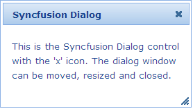

Refer to the Getting Started section to know the pre-requisites before stepping in to add a dialog control to the MVC application.
Using Builder
The following steps explain the addition of a dialog to an application using Builder.
1. In View, create the contents of the dialog and invoke the dialog helper with the Control ID as the first argument followed by the TargetControlId method with the ID of the dialog contents as argument.
|
View[aspx]
<div id="dialogContents" title="Syncfusion Dialog" style="visibility: hidden"> This is the Syncfusion Dialog control with the 'x' icon. The dialog window can be moved, resized and closed. </div> <%=Html.Syncfusion().Dialog("myDialog") .TargetControlId("dialogContents")%>
|
|
View[cshtml]
<div id="dialogContents" title="Syncfusion Dialog" style="visibility: hidden"> This is the Syncfusion Dialog control with the 'x' icon. The dialog window can be moved, resized and closed. </div> @{ Html.Syncfusion().Dialog("myDialog") .TargetControlId("dialogContents").Render();}
|
 Note: The style attribute visibility of the dialog
content is set to hidden for better rendering on page load. The visibility will
be reset internally once the resources related to the control gets loaded
completely.
Note: The style attribute visibility of the dialog
content is set to hidden for better rendering on page load. The visibility will
be reset internally once the resources related to the control gets loaded
completely.
2. Build and run the application.
Using Properties Model
The following steps explain the addition of a dialog to an application using the Properties model.
1. In the Controller, create an instance of the DialogModel, define the TargetControlId and pass the instance through View Specific Data to View as given below.
|
[Controller]
public ActionResult Index() { //create an instance of DialogModel DialogModel myModel = new DialogModel(); myModel.TargetControlId = "dialogContents";
//pass the instance through view data to the view ViewData["myDialog"] = myModel; return View(); }
|
2. In View, create the dialog contents and invoke the dialog helper with the View Data key as the first argument.
|
[ASPXView[aspx]
<div id="dialogContents" title="Syncfusion Dialog" style="visibility: hidden"> This is the Syncfusion Dialog control with the 'x' icon. The dialog window can be moved, resized and closed. </div> <%=Html.Syncfusion().Dialog("myDialog")%>
|
|
View[cshtml]
<div id="dialogContents" title="Syncfusion Dialog" style="visibility: hidden"> This is the Syncfusion Dialog control with the 'x' icon. The dialog window can be moved, resized and closed. </div> @{ Html.Syncfusion().Dialog("myDialog").Render();}
|
3. Build and run the application.
The output is shown in the following screenshot.

Figure 116: Dialog
A sample that demonstrates a basic Dialog control can be downloaded from the following link.
Note:The version number for the assemblies has
been set to 8.3.0.20 in the Web.config file of the attached sample. Change the
version number to the appropriate version in the Web-2008.config or
Web-2010.config files (available in root directory) and those will automatically
be updated in the Web.config file.